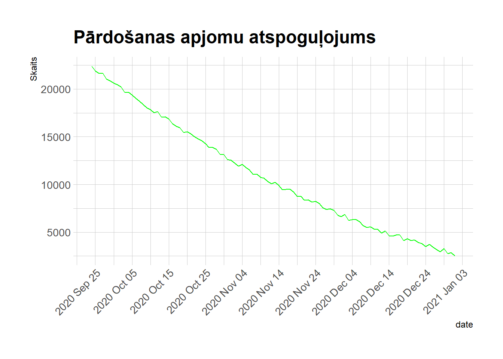

options(warn=-1)
suppressMessages(library(GGally))
data(flea)
ggpairs(flea, columns = 2:4, ggplot2::aes(colour=species)) Correlation matrix with ggally
Connected Scatterplot
suppressMessages(library(GGally))
ggparcoord(iris,
columns = 1:4, groupColumn = 5,
title = "Īrisu šķirnes")Dendogram
suppressMessages(library(tidyverse))
dend <- mtcars %>%
select(mpg, cyl, disp) %>%
dist() %>%
hclust() %>%
as.dendrogram()
# attālums no apakšas, kreisā, augša, labā puse
par(mar=c(8,4,1,1))
plot(dend, main="Auto sadalījums pa klāsteriem",
col = "red", col.main = "green")# Phylogenetic trees
suppressMessages(library(ape))
hc = hclust(dist(mtcars))
krasas = c("red", "blue" , "darkgreen", "pink", "yellow", "green", "purple")
# klasteru skaits
clus7 = cutree(hc, 7)
# Dendogrammu tipi
plot(as.phylo(hc), type="cladogram", tip.color = krasas[clus7], cex = 0.5, label.offset = 0.1)plot(as.phylo(hc), type="unrooted",tip.color = krasas[clus7], cex = 0.3, label.offset = 0.1)plot(as.phylo(hc), type="fan", tip.color = krasas[clus7], cex = 1, label.offset = 0.1)plot(as.phylo(hc), type = "radial", tip.color = krasas[clus7], label.offset = 0.1, cex = log(mtcars$mpg,15), col = "red")Time series
suppressMessages(library(ggplot2))
suppressMessages(library(dplyr))
suppressMessages(library(hrbrthemes))
# Dati tiek uzģenerēti ar nejaušiem datiem
df <- data.frame(date = as.Date("2021-01-01") - 0:99,
sales = runif(100, 10, 500) + seq(50, 149)^2)
laiks <- ggplot(df, aes(x=date, y=sales)) +
geom_line(color="green") +
ggtitle("Pārdošanas apjomu atspoguļojums") +
scale_y_continuous(name = "Skaits") +
theme_ipsum_tw() +
theme(axis.text.x=element_text(angle=45, hjust=1))
laiks + scale_x_date(date_labels = "%Y %b %d", date_breaks = "10 day")
Map
suppressMessages(library(leaflet))
m <- leaflet()
m <- setView(m, lng = 23.7317, lat = 56.6508, zoom = 13)
m <- addTiles(m)
orangeIcon <- makeIcon(
iconUrl = "https://raw.githubusercontent.com/R-CoderDotCom/samples/main/marker.png",
iconWidth = 35, iconHeight = 35,
iconAnchorX = 20, iconAnchorY = 10
)
m <- addMarkers(m, lng = 23.73272, lat = 56.65582,
popup="ITF", icon = orangeIcon)
m <- addMarkers(m, lng = 23.71252, lat = 56.64899,
popup="Ozolskvērs", icon = orangeIcon)
m <- addMarkers(m, lng = 23.7556, lat = 56.6609,
popup="Zemgales Olimpiskais centrs", icon = orangeIcon)
m <- addMarkers(m, lng = 23.68755, lat = 56.6389,
popup="Svētes palienas pļavas", icon = orangeIcon)
m <- addMarkers(m, lng = 23.72308, lat = 56.64768,
popup="Raiņa parks", icon = orangeIcon)
mConecting routes
suppressMessages(library(maps))
# No margin
par(mar=c(0,0,0,0))
# World map
map('world',
col="lightgreen", fill=TRUE, bg="blue", lwd=0.1,
mar=rep(0,4), border=1, ylim=c(-40,100)
)
suppressMessages(library(dplyr))
# Pilsētu koordinātes
LasVegas <- c(-115,36)
Paris <- c(2,49)
Riga <- c(24,56)
Maroka <- c(-10,28)
Hongkong <- c(114,22)
saikne <- rbind(LasVegas, Paris, Riga, Maroka, Hongkong) %>% as.data.frame()
colnames(saikne) <- c("long","lat")
points(x=saikne$long, y=saikne$lat, col="red", cex=2.5, pch=20)
# Ielādēt geosphere
suppressMessages(library(geosphere))
# Saiknes izveidošana
inter1 <- gcIntermediate(Paris, LasVegas, n=10, addStartEnd=TRUE, breakAtDateLine=F)
lines(inter1, col="yellow", lwd=3)
inter2 <- gcIntermediate(Riga, Paris, n=10, addStartEnd=TRUE, breakAtDateLine=F)
lines(inter2, col="yellow", lwd=3)
inter3 <- gcIntermediate(Paris, Maroka, n=10, addStartEnd=TRUE, breakAtDateLine=F)
lines(inter3, col="pink", lwd=3)
inter4 <- gcIntermediate(Riga, Hongkong, n=10, addStartEnd=TRUE, breakAtDateLine=F)
lines(inter4, col="purple", lwd=3)options(warn=0)